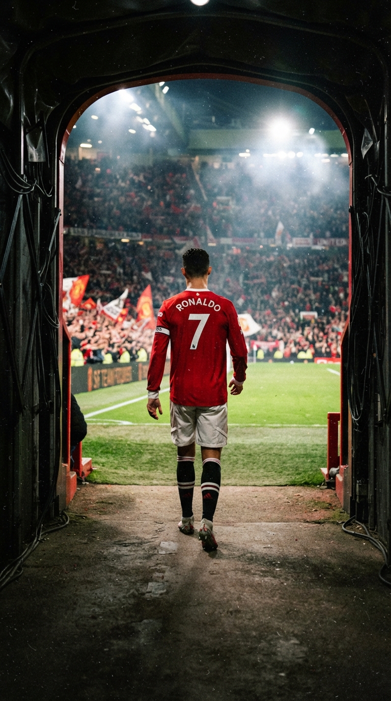

Official Career
900+
All-Time Goals
Club + Nation

Chapter IThe Descent to Greatness
Born in Madeira. Crafted in Manchester.
Scroll
In the Shadows
“Your love makes me strong.
Your hate makes me unstoppable.”
He didn't arrive asking for permission. In August 2003, an 18-year-old boy from Madeira stepped onto the sacred turf of Old Trafford wearing the hallowed shirt worn by Best, Cantona and Beckham. With blistering stepovers, ferocious pace and an uncompromising obsession with perfection, he turned skepticism into reverence and stadiums into his personal coliseums.
Position Apex Predator | Icon
01 // Incomprehensible
Official metrics. Devoured in the history of world football.
Official Career
900+
All-Time Goals
Club + Nation
Ultimate Prize
05
Ballon d'Or
World's Best Player
Continental Glory
05
UCL Trophies
Mr. Champions League
Distinction
66
Career Hat-Tricks
Mounted Lethality
International Record 130+ International Goals #1
Psychology // 02
“I see myself as the best.”
Chronology // Glory '03—'24
2003 Debut
Sir Alex Ferguson handed him Sir Bobby's number 7. He came on against Bolton Wanderers, nearly tore the pitch up with stepovers, and the legend began.
2008 Ballon d'Or
A 42-goal season. A goalscoring header against Chelsea in the Champions League final. Manchester United's first European Cup since 1999.
2009 Technical
A strike of such ruthless audacity from nearly the halfway line that it sealed the inaugural FIFA Puskás Award for the year's greatest goal.
2021 Homecoming
A return after twelve years. Two goals on debut against Newcastle. Old Trafford erupted the way only Old Trafford can.
Eternal Legacy
Breaking every statistical barrier known to the modern game, standing alone as the greatest goalscorer the world has ever witnessed.